Lake, J., G.M. While, A.G. Ophir, D.R. Rubenstein, L. Witczak Oldfather, and M.J. Whiting. 2026. Vasotocin influences mother–offspring associations in a facultatively family-living lizard. Behavioral Ecology 37(5): arag082.
Research outputs
Publications
Peer-reviewed articles, reviews and book chapters by Martin Whiting, his students, and collaborators, spanning animal communication, cognition, social evolution and behavioural ecology.
Featured research
On the cover
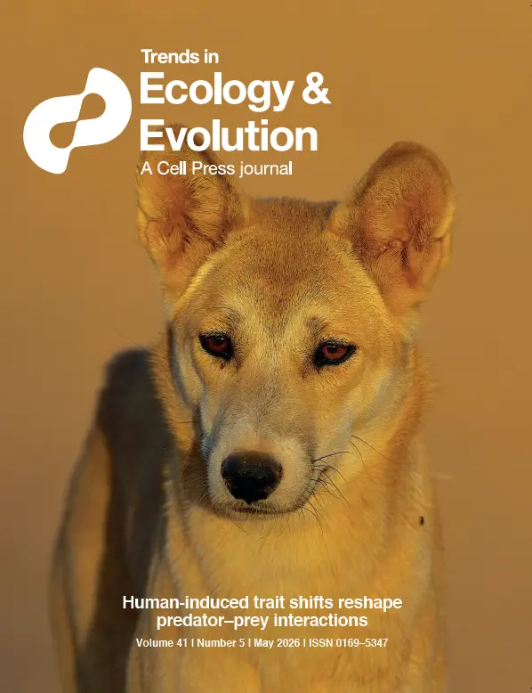
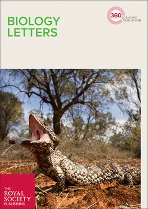
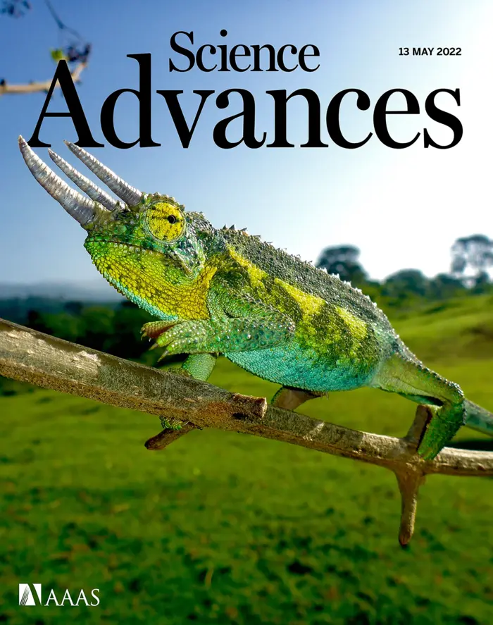
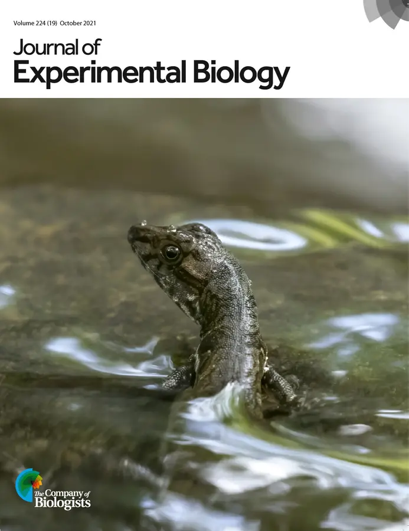
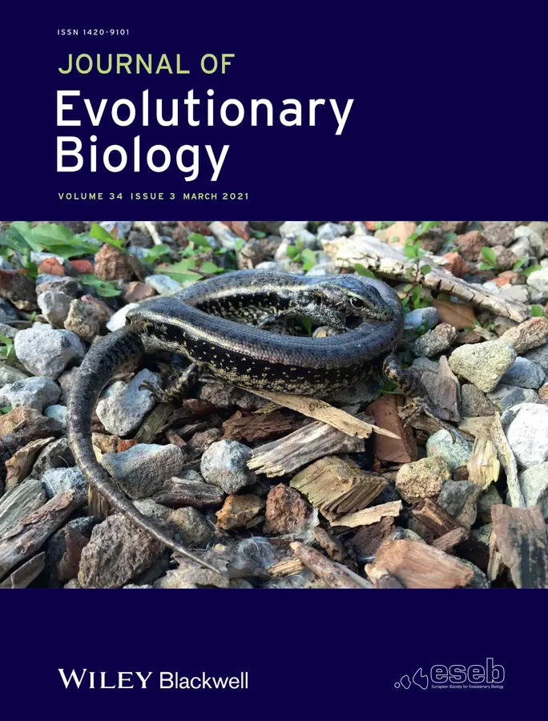
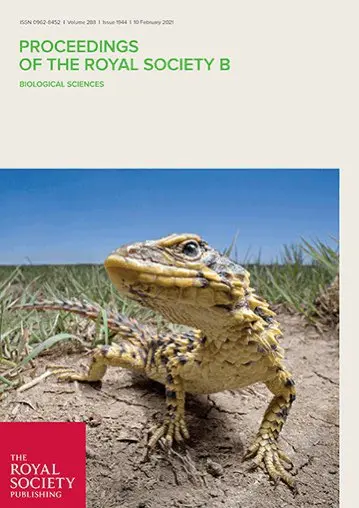
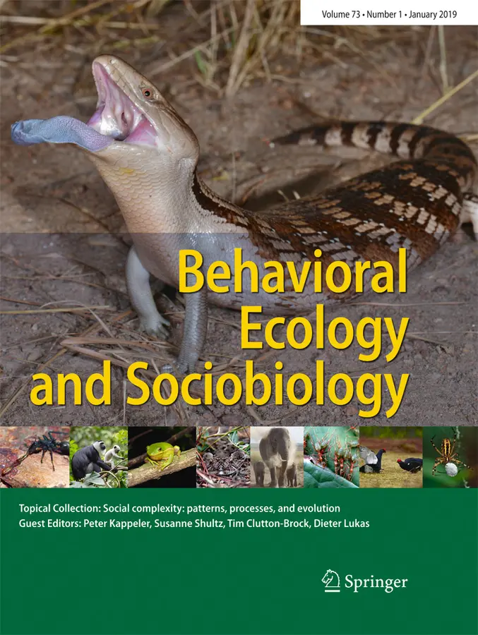
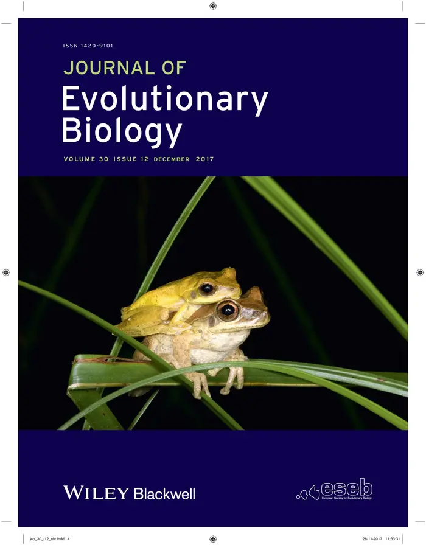
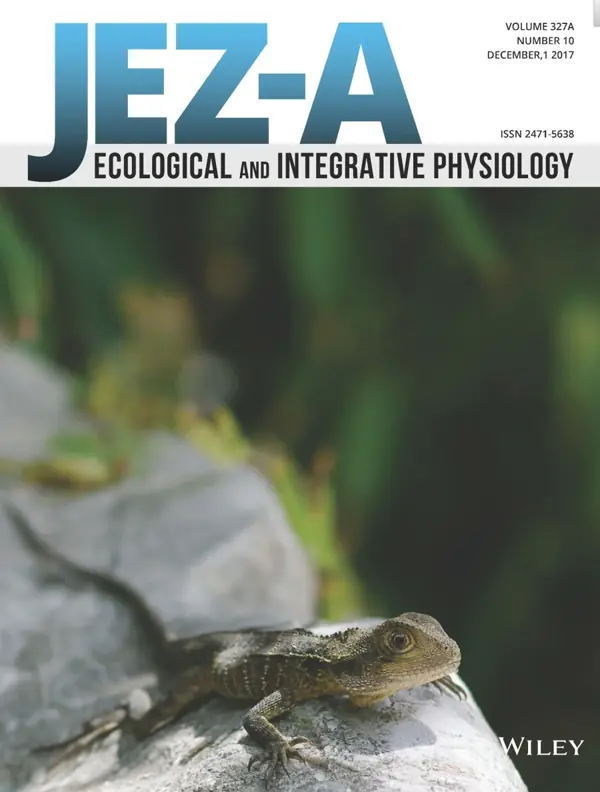
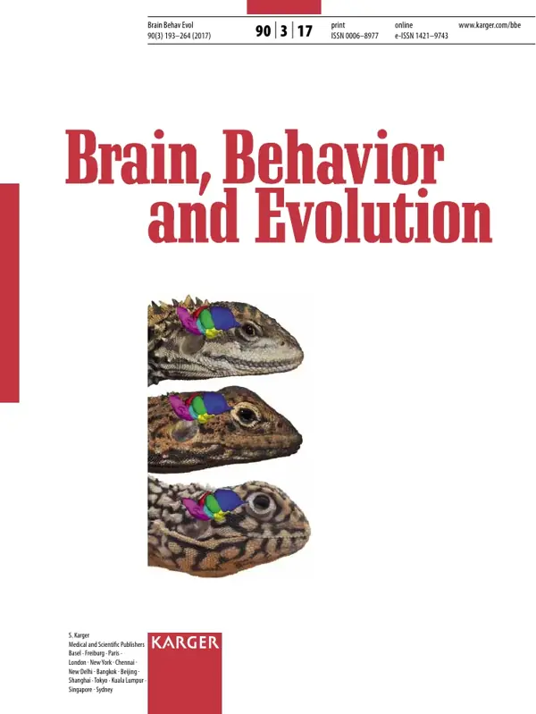
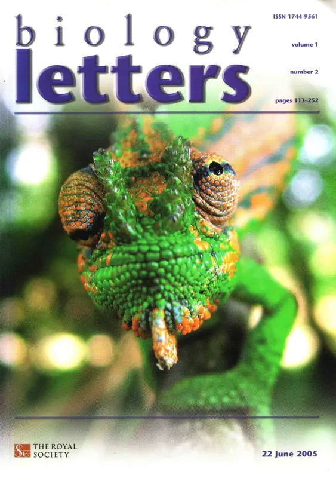
Year by year
Peer-reviewed publications
Publications are listed chronologically with the most recent at the top. Book chapters are listed in their own section below, as are a range of other written work (book reviews, natural history notes, popular articles, species accounts/IUCN, correspondence, technical reports and obituaries).
No publications match your search.
202611 publications
Lake, J., M.J. Whiting, G.M. While, D. Kabelik, D.R. Rubenstein, and D. Hoops. 2026. The neural distribution of vasotocin, oxytocin, dopamine, and serotonin in two Australian skinks with contrasting social lives. Journal of Comparative Neurology 534, no. 7: e70184.
Faria, J.F., R. Megía-Palma, M.J. Whiting, and D.J. Harris. 2026. Blood parasite infection is associated with lower thermoregulatory precision in the lizard Podarcis lusitanicus. Journal of Thermal Biology 139:104514.
Byrne, P.G., M.J. Whiting, A.J. Silla, and J.S. Keogh. 2026. “Nesting assistance”: a new hypothesis for the evolution of polyandry and a test in an African foam-nesting treefrog. Evolution 80:1657-1671.
Deering, S., M.J. Whiting, J.S. Doody, R.P. Duncan, H. Fryer, S. Clulow. 2026. Predatory crows use behavioural flexibility to overcome a novel, toxic prey. Behavioural Ecology and Sociobiology 80, 74 (2026).
Wong, R., S. Jeni, B. Ashton, C. Brown, and M.J. Whiting. 2026. Can lizards count? Testing numerosity in an Australian skink using spontaneous and trained quantity discrimination. Animal Behaviour 236, 123557.
Wooster, E.I.F., C.J. Jolly, D.G. Nimmo, B.J. Ashton, M. Cantor, M.J. Whiting, R.K. Kopf, S. Des Roches, A.J.R. Carthey, L.A. Stanton, E.G. Ritchie, M.G. Bertram, and K.M. Gaynor. 2026. Human-induced trait shifts reshape predator—prey interactions. Trends in Ecology and Evolution 41:427-438.
Hoops, D., and M.J. Whiting. 2026. Preliminary evolutionary trends of Ctenophorus dragon (Lacertilia: Agamidae) lifespans, with a new longevity record. Ecology and Evolution 16, no. 3: e73191.
Lambreghts, Y., M.J. Whiting, T. Uller, C.M. Whittington, and G.M. While. 2026. The prenatal foundations of kin recognition. Trends in Ecology and Evolution 41:211-218.
Wooster, E.I.F., M.J. Whiting, D.G. Nimmo, F. Sayol, A.J.R. Carthey, L.A. Stanton, and B.J. Ashton. 2026. Predator–prey interactions as drivers of cognitive evolution. Nature Reviews Biodiversity 2:273-281.
Whiting, M.J., and G.M. While. 2026. Tiliquin lizards as a model vertebrate system for understanding the emergence of societies. Animal Behaviour 231: 123404.
20253 publications
Stroud, J. T., J. J. Kolbe, B. Doshna, C. V. Anderson, S. S. French, D. B. Miles, P. A. Zani, J. J. Suh, D. C. Passos, T. J. Roberts, M. J. Whiting, K. Cusick, M. Aja, M. Appleton, A. Arnashus, D. S. Arnold, E. Bastiaans, K. Barnett, K. E. Boronow, J. A. Brisson, D. Calder, S. Clay, J. Clobert, M. B. Connior, T. L. Cooper, M. d. R. Castañeda, C. M. S. Dufour, T. Gamble, A. J. Geneva, L. N. Gray, K. Griffin, J. M. Hall, N. C. Herrmann, B. Hillen, L. E. Johnson, A. Kamath, T. Langkilde, C. Langner, O. Lapiedra, M. Leal, I. Maayan, M. Massot, A. H. Miller, M. M. Muñoz, G. Norval, S. L. Perkins, D. A. Pike, T. W. Schoener, A. R. Templeton, E. Vazquez, A. Walker, and J. B. Losos. 2025. Pirates of the Caribbean (and elsewhere): Three-legged lizards and the study of evolutionary adaptation. The American Naturalist 206:403-417.
Jolly, C.J., D.G. Nimmo, A.J.R. Carthey, E.H.V. van de Pas, and M.J. Whiting. 2025. From anecdote to evidence: experimental validation of fire-cue recognition in Australian sleepy lizards. Biology Letters. 21: 20250364. Cover image.
Wilkinson, A., S.A. Reber, H. Root-Gutteridge, A. Dassow, and M.J. Whiting. 2025. Cold-blooded culture? Assessing cultural behaviour in reptiles and its potential conservation implications. Philosophical Transactions of the Royal Society B 380:20240129.
20245 publications
Lee, K.-H., M.D.J. Blyton, S.S. Godfrey, A. Sih, M.G. Gardner, M.J. Whiting, and S.T. Leu. 2024. Enterobacteriaceae community dynamics in sleepy lizards: Richness, prevalence and co-occurrence over time. Austral Ecology 49, e70014.
Beltrán, I., C. Vila-Pouca, R. Loiseleur, J.K. Webb, S. Herculano-Houzel, and M.J. Whiting. 2024. Effect of elevated incubation temperatures on learning and brain anatomy of hatchling and juvenile lizards. Journal of Comparative Physiology B 195:67-79.
Naguib, M., E. ter Avest, C. Tyson, M.J. Whiting, S.C. Griffith, and H. Loning. 2024. High nest failure in a zebra finch population and persistent nest predation by a monitor lizard. Ecology and Evolution 14, e11281.
Lin, FC., PJ.L. Shaner, MY. Hsieh, M.J. Whiting, and SM. Lin. 2024. Trained quantity discrimination in the invasive red-eared slider and a comparison with the native stripe-necked turtle. Animal Cognition 27: 26 (2024).
Szabo, B., M.L. Holmes, B.J. Ashton, and M.J. Whiting. 2024. Spontaneous quantity discrimination in the Australian sleepy lizard (Tiliqua rugosa). Behavioral Ecology 35: arado89.
20233 publications
Pekar, S., M.J. Whiting, and M.E. Herberstein. 2023. Golden mimics use multiple defences to counter generalist and specialist predators. Behavioral Ecology 34:1055-1064.
Webster, G.N., T.E. White, and M. J. Whiting. 2023. Male nuptial display colour and vocalisation appear to signal independent information in the whirring tree frog. Behavioral Ecology and Sociobiology 77: 68 (2023).
Lee, K-H., M.J. Whiting, and S.T. Leu. 2023. Are whole-organism performance and thermal preference linked to endo-and ectoparasites in a short-lived lizard? Ethology 129:432-443.
202215 publications
Simms, A., M.J. Whiting, J.S. Doody, J. Nilawati, F.Y. Tantu, A. Walde, F. Lauhido, C. Light, M. Kusrini, A. Hamidy, A.P. Allen, and S. Clulow. 2022. Preliminary insights on the spatial ecology, population demography, and sexual dimorphism of the critically endangered Sulawesi forest turtle (Leucocephalon yuwonoi). Journal of Herpetology 56:461–469.
Lee, K-H, M.J. Whiting, and S. Leu. 2022. Seasonal differences in parasite load in a short-lived lizard. Australian Journal of Zoology 70:36-41.
Greis, L.M., E. Ringler, M.J. Whiting, and B. Szabo. 2022. Lizards lack speed-accuracy trade-offs in a quantitative foraging task when unable to sample the reward. Behavioural Processes 202:104749.
Yagound, B., A.J. West, M.F. Richardson, J. Gruber, J.G. Reid, M.J. Whiting, and L.A. Rollins. 2022. Captivity induces large and population-dependent brain transcriptomic changes in wild-caught cane toads (Rhinella marina). Molecular Ecology 31:4949-4961.
Zhang, X.-L., F. Alvarez, M.J. Whiting, X.-D. Qin, Z-N. Chen, and Z.-J. Wu. 2022. Climate change and dispersal ability jointly affects the future distribution of crocodile lizards. Animals 12(20):2731.
Qiu, X., M.J. Whiting, W. Du, Z. Wu, S. Luo, B. Yue, J. Fu, and Y. Qi. 2022. Colour variation in the crocodile lizard (Shinisaurus crocodilurus) and its relationship to individual quality. Biology 11(9):1314.
Szabo, B., and M.J. Whiting. 2022. A new protocol for investigating visual two-choice discrimination learning in lizards. Animal Cognition 25:935-950.
Hoops, D., M.J. Whiting, and J.S. Keogh. 2022. A smaller habenula is associated with increasing intensity of sexual selection. Brain Behavior and Evolution 97:265-273.
Whiting, M.J., D.W.A. Noble, and Y. Qi. 2022. A potential deimatic display revealed in a lizard. Biological Journal of the Linnean Society 136:455–465.
Ducatez, S., J.L. DeVore, M.J. Whiting, and J-N. Audet. 2022. Editorial: Cognition and adaptation to urban environments. Frontiers in Ecology and Evolution 10:953494. 10.
Herberstein, M.E., D.J. McLean, E. Lowe, J.O. Wolff, Md Kawsar Khan, K. Smith, A.P. Allen, M. Bulbert, B.A. Buzatto, M.D.B. Eldridge, D. Falster, L. Fernandez Winzer, J.S. Madin, A. Narendra, M. Westoby, S.C. Griffith, M.J. Whiting, I.J. Wright, and A.J.R. Carthey. 2022. AnimalTraits - a curated animal trait database for body mass, metabolic rate and brain size. Scientific Data 9, 265 (2022).
Whiting, M.J., B.S. Holland, J.S. Keogh, D.W.A. Noble, K.J. Rankin, and D. Stuart-Fox. 2022. Invasive chameleons released from predation display more conspicuous colors. Science Advances 8(19): p. eabn2415.
Riley, J.L., J. Baxter-Gilbert, M.J. Whiting, and M. Cherry. 2022. Partitioned parturition: Birthing asynchrony in cordylid lizards. Journal of Zoology 316:263-270.
Hobbs, R.J., R. Upton, L. Keogh, K. James, J. Baxter-Gilbert, and M.J. Whiting. 2022. Sperm cryopreservation in an Australian skink (Eulamprus quoyii). Reproduction, Fertility and Development 34:428-437.
Bouffet-Halle, A, W. Yang, M.G. Gardner, M.J. Whiting, E. Wapstra, T. Uller, and G.M. While. 2022. Characterisation and cross-amplification of sex-specific genetic markers in Australasian Egerniinae lizards and their implications for understanding the evolution of sex determination and social complexity. Australian Journal of Zoology 69:33-40.
202117 publications
Riley, J.L., D.W.A. Noble, A.J Stow, P.E. Bolton, G.W. While, S. Dennison, R.W. Byrne, and M.J. Whiting. 2021. Socioecology of the Australian Tree Skink (Egernia striolata). Frontiers in Ecology and Evolution 9:722455.
Baeckens, S., M. Temmerman, S.N. Gorb, C. Neto, M.J. Whiting, and R. Van Damme. 2021. Convergent evolution of skin surface microarchitecture and increased skin hydrophobicity in semi-aquatic anole lizards. Journal of Experimental Biology 224(19).
Chen, C.W., M.J. Whiting, E.C. Yang, and S-M. Lin. 2021. Do I stay or do I go? Shifts in perch use by lizards during morning twilight suggest anticipatory behaviour. Biology Letters 17(10): 20210388.
Lin, F.C., M.J. Whiting, M.Y. Hsieh, P-J.L. Shaner, and S-M. Lin. 2021. Superior continuous quantity discrimination in a freshwater turtle. Frontiers in Zoology 18, 49 (2021).
Van Dyke, J.U., M.B. Thompson, C.P. Burridge, M.A. Castelli, S. Clulow, D.S.B. Dissanayake, C.M. Dong, J.S. Doody, D.L. Edwards, T. Ezaz, C.R. Friesen, M.G. Gardner, A. Georges, M. Higgie, P.L. Hill, C.E. Holleley, D. Hoops, C.J. Hoskin, D.L. Merry, J.L. Riley, E. Wapstra, G.M. While, S.L. Whiteley, M.J. Whiting, S.M. Zozaya and C.M. Whittington. 2021. Australian lizards are outstanding models for reproductive biology research. Australian Journal of Zoology 68:168-199.
Riley, J.L., A.J. Stow, P.E. Bolton, S. Dennison, R.W. Byrne, and M.J. Whiting. 2021. Sperm storage in a family-living lizard, the tree skink (Egernia striolata). Journal of Heredity 112:526-534.
Beltrán, I., C. Perry, F. Degottex, and M.J. Whiting. 2021. Behavioral thermoregulation by mothers protects offspring from global warming but at a cost. Physiological and Biochemical Zoology 94:5, 302-318.
Beltrán, I., S. Herculano-Houzel, B. Sinervo, and M.J. Whiting. 2021 Are ectotherm brains vulnerable to global warming? Trends in Ecology and Evolution 36:691-699.
Riley, J.L., J. Baxter-Gilbert, and M.J. Whiting. 2021. Social and spatial patterns of two Afromontane crag lizards (Pseudocordylus spp.) in the Maloti-Drakensberg Mountains, South Africa. Austral Ecology 46: 847-859.
Baxter-Gilbert, J., J.L. Riley, C.H. Frère, and M.J. Whiting. 2021. Shrinking into the big city: Influence of genetic and environmental factors on urban dragon lizard morphology and performance capacity. Urban Ecosystems 24:661–674.
Szabo, B., D.W.A. Noble, K.J. Mccloghry, M.E.S. Monteiro, and M.J. Whiting. 2021. Spontaneous quantity discrimination in a family-living lizard. Behavioral Ecology 32:686–694.
Chapple, D.G., U. Roll, M. Böhm, R. Aguilar, A.P. Amey, C.C. Austin, M. Baling, A.J. Barley, M.F. Bates, A.M. Bauer, D.G. Blackburn, P. Bowles, R.M. Brown, S.R. Chandramouli, L. Chirio, H. Cogger, G.R. Colli, W. Conradie, P.J. Couper, M.A. Cowan, M.D. Craig, I. Das, A. Datta-Roy, C.R. Dickman, R.J. Ellis, A.L. Fenner, S. Ford, S.R. Ganesh, M.G. Gardner, P. Geissler, G.R. Gillespie, F. Glaw, M.J. Greenlees, O.W. Griffith, L.L. Grismer, M.L. Haines, D. J. Harris, S.B. Hedges, R.A. Hitchmough, C.J. Hoskin, M.N. Hutchinson, I. Ineich, J. Janssen, G.R. Johnston, B.R. Karin, J.S. Keogh, F. Kraus, M. LeBreton, P. Lymberakis, R. Masroor, P.J. McDonald, S. Mecke, J. Melville, S. Melzer, D.R. Michael, A. Miralles, N.J. Mitchell, N.J. Nelson, T.Q. Nguyen, C. de Campos Nogueira, H. Ota, P. Pafilis, O.S.G. Pauwels, A. Perera, D. Pincheira-Donoso, R.N. Reed, M.A. Ribeiro-Júnior, J.L. Riley, S. Rocha, P.L. Rutherford, R.A. Sadlier, B. Shacham, G.M. Shea, R. Shine, A. Slavenko, A. Stow, J. Sumner, O. J.S. Tallowin, R. Teale, O. Torres-Carvajal, J.F. Trape, P. Uetz, K.D.B. Ukuwela, L. Valentine, J. U. Van Dyke, D. van Winkel, R. Vasconcelos, M. Vences, P. Wagner, E. Wapstra, G.M. While, M.J. Whiting, C.M. Whittington, S. Wilson, T. Ziegler, R. Tingley, S. Meiri, 2021. Conservation status of the world's skinks (Scincidae): Taxonomic and geographic patterns in extinction risk. Biological Conservation 257:.
Szabo, B., D.W.A. Noble, and M.J. Whiting. 2021. Learning simple and compound stimuli in a social lizard (Egernia stokesii). Journal of Comparative Psychology 135:208-218.
Brakes, P., E.L. Carroll, S.R.X. Dall, S.A. Keith, P.K. McGregor, S.L. Mesnick, M.J. Noad, L. Rendell, M.M. Robbins, C. Rutz, A. Thornton, A. Whiten, M.J. Whiting, L.M. Aplin, S. Bearhop, P. Ciucci, V. Fishlock, J.K.B. Ford, G. Notarbartolo di Sciara, M.P. Simmonds, F. Spina, P.R. Wade, H. Whitehead, J. Williams, and E.C. Garland. 2021. A deepening understanding of animal culture suggests lessons for conservation. Proceedings of the Royal Society B. 288: 20202718.
Szabo, B., D.W.A. Noble, and M.J. Whiting. 2021. Learning in non‐avian reptiles 40 years on: advances and promising new directions. Biological Reviews 96:331-356.
Noble, D.W.A., F. Kar, S. Nakagawa, J.S. Keogh, and M.J. Whiting. 2021. Sexual selection on performance traits in an Australian lizard with alternative reproductive tactics. Journal of Evolutionary Biology 34:451-464.
Baeckens, S., and M.J. Whiting. 2021. Investment in chemical signalling glands facilitates the evolution of sociality in lizards. Proceedings of the Royal Society B 288: 20202438.
20207 publications
Beltrán, I. V. Durand, R. Loiseleur, and M.J. Whiting. 2020. Effect of early thermal environment on the morphology and performance of a lizard species with bimodal reproduction. Journal of Comparative Physiology B 190(6):795-809.
Szabo, B., S. Hoefer, and M.J. Whiting. 2020. Are lizards capable of inhibitory control? Performance on a semi-transparent version of the cylinder task in five species of Australian skinks. Behavioral Ecology and Sociobiology 74:118.
Damas-Moreira, I., J.L. Riley, M.A. Carretero, D.J. Harris, and M.J. Whiting. 2020. Getting ahead: Exploitative competition by an invasive lizard. Behavioral Ecology and Sociobiology 74:117.
Szabo, B., I. Damas-Moreira, and M.J. Whiting. 2020. Can cognitive ability give invasive species the means to succeed? A Review of the evidence. Frontiers in Ecology and Evolution 8:187.
Beltrán, I, R. Loiseleur, V. Durand, and M.J. Whiting. 2020. Effects of early thermal environment on the behavior and learning of a lizard with bimodal reproduction. Behavioral Ecology and Sociobiology 74(6):73.
Szabo, B., M.J. Whiting. 2020. Do lizards have enhanced inhibition? A test in two species differing in ecology and sociobiology. Behavioural Processes 104043.
Perez-Martinez, C.A., J.L. Riley, and M.J. Whiting. 2020. Uncovering the function of an enigmatic display: antipredator behaviour in the iconic Australian frillneck lizard. Biological Journal of the Linnean Society 129: 425-438.
20199 publications
Lin-Stephens, S., J.M. Kubicki, F.J. Jones, M.J. Whiting, J. Uesi, and M.W. Bulbert. 2019. Building student employability through interdisciplinary collaboration: an Australian case study. College & Undergraduate Libraries 26:234-251.
Szabo, B., D.W.A. Noble, R.W. Byrne, D.S. Tait, and M.J. Whiting. 2019. Precocial juvenile lizards show adult level learning and behavioural flexibility. Animal Behaviour 154:75-84.
Baxter-Gilbert, J., J.L. Riley, and M.J. Whiting. 2019. Bold New World: urbanization promotes an innate behavioral trait in a lizard. Behavioral Ecology and Sociobiology 73: 105.
Szabo, B., M.J. Whiting, and D.W.A. Noble. 2019. Sex-dependent discrimination learning in lizards: A meta-analysis. Behavioural Processes 164:10-16.
Wu, Y., M.J. Whiting, J. Fu, and Y. Qi. 2019. The driving forces behind female-female aggression and its fitness consequence in an Asian agamid lizard. Behavioral Ecology and Sociobiology 73: 73.
Damas-Moreira I, J.L. Riley, D.J. Harris, and M.J. Whiting. 2019. Can behaviour explain invasion success? A comparison between sympatric invasive and native lizards. Animal Behaviour 151:195-202.
Szabo, B., D.W.A. Noble, and M.J. Whiting. 2019. Context-specific response inhibition and differential impact of a learning bias in a lizard. Animal Cognition 22:317-329.
Baxter-Gilbert, J. and M.J. Whiting. 2019. Street fighters: Bite force, injury rates, and density of urban Australian water dragons (Intellagama lesueurii). Austral Ecology 44:255-264.
Brakes, P., S.R.X. Dall, L.M. Aplin, S. Bearhop, E.L. Carroll, P. Ciucci, V. Fishlock, J.K.B. Ford, E.C. Garland, S.A. Keith, P.K. McGregor, S.L. Mesnick, M.J. Noad, G. Notarbartolo di Sciara, M.M. Robbins, M.P. Simmonds, F. Spina, A. Thornton, P.R. Wade, M.J. Whiting, J. Williams, L. Rendell, H. Whitehead, A. Whiten, C. Rutz. 2019. Animal culture and conservation: Understanding the rich social lives of animals benefits international conservation efforts. Science 363: 1032-1034.
201813 publications
Hobbs R., L. Keogh, K. James, J. Baxter-Gilbert, and M. Whiting. 2018. 109 Sperm cryopreservation in Eulamprus quoyii (Eastern water skink). Reproduction, Fertility and Development 31:180-181.
Damas-Moreira I, D. Oliveira, J.L. Santos, J.L. Riley, D.J. Harris, and M.J. Whiting. 2018. Learning from others: an invasive lizard uses social information from both conspecifics and heterospecifics. Biology Letters 14: 20180532.
Szabo, B., D.W.A. Noble, R.W. Byrne, D.S. Tait, and M.J. Whiting. 2018. Subproblem learning and reversal of a multidimensional visual cue in a lizard: evidence for behavioural flexibility? Animal Behaviour 144:17-26.
Hoops, D., E. Desfilis, J.F.P. Ullmann, A.L. Janke, T. Stait-Gardner, G.A. Devenyi, W.S. Price, L. Medina, M.J. Whiting, and J.S. Keogh. 2018. A 3D MRI-based atlas of a lizard brain. Journal of Comparative Neurology 526: 2511–2547.
Merkling*, T., D. Chandrasoma*, K.J. Rankin, and M.J. Whiting*. 2018. Seeing red: pteridines and male quality in a dragon lizard. Biological Journal of the Linnean Society 124:677–689. Accepted 17 May 2018. *These authors contributed equally to the ms.
*Badiane, A., P. Carazo*, S.J. Price-Rees, M. Ferrando-Bernal, and M.J. Whiting*. 2018. Why blue tongue? a potential UV-based deimatic display in a lizard. Behavioral Ecology and Sociobiology 72:104. *These authors contributed equally to the ms. Cover.
Qi, Y., D.W.A. Noble, J. Fu, and M.J. Whiting. 2018. Testing domain general learning in an Australian lizard. Animal Cognition 21:595–602.
Baxter-Gilbert, J., J.L. Riley, and M.J. Whiting. 2018. Runners and fighters: Clutch effects and body size drive innate antipredator behaviour in hatchling lizards. Behavioral Ecology and Sociobiology 72:97.
*Whiting, M.J., F. Xu*, F. Kar*, J.L. Riley, R.W. Byrne, and D.W.A. Noble. 2018. Evidence for social learning in a family living lizard. Frontiers in Ecology and Evolution 6: 70. *These authors contributed equally to the ms.
Gruber, M.J. Whiting, J., G. Brown, and R. Shine. 2018. Effects of rearing environment and population origin on responses to repeated behavioural trials in cane toads (Rhinella marina). Behavioural Processes 153:40-46.
Gruber, J., G. Brown, M.J. Whiting, and R. Shine. 2018. Behavioural divergence during biological invasions: a study of cane toads (Rhinella marina) from contrasting environments in Hawai’i. Royal Society Open Science 5:180197.
Riley, J.L., C. Guidou, C. Fryns, J. Mourier, S. Leu, D.W.A. Noble. R.W. Byrne, and M.J. Whiting. 2018. Isolation rearing does not constrain social plasticity in a family-living lizard. Behavioral Ecology 29:563–573.
Riley, J.L., A. Küechler, T. Damasio, D.W.A. Noble, R.W. Byrne, and M.J. Whiting. 2018. Learning ability is unaffected by isolation rearing in a family-living lizard. Behavioral Ecology and Sociobiology 72:20.
201713 publications
Baxter-Gilbert, J., M. Mühlenhaupt, and M.J. Whiting. 2017. Comparability and repeatability of three commonly used methods for measuring endurance capacity. Journal of Experimental Zoology Part A: Ecological Genetics and Physiology 327: 583–591. Cover.
Bell, R.C., G.N. Webster, and M.J. Whiting. 2017. Breeding biology and the evolution of dynamic sexual dichromatism in frogs. Journal of Evolutionary Biology 30: 2104–2115. Cover.
Gruber, J., M.J. Whiting, G. Brown, and R. Shine. 2017. The loneliness of the long-distance toad: invasion history and social attraction in cane toads (Rhinella marina). Biology Letters 13: 20170445.
Gruber, J., G. Brown, M.J. Whiting, and R. Shine. 2017. Is the behavioural divergence between range-core and range-edge populations of cane toads (Rhinella marina) due to evolutionary change or developmental plasticity? Royal Society Open Science Vol. 4, online ISSN: 2054-5703.
Hoops, D., M. Vidal-García, J.F.P. Ullmann, A.L. Janke, T. Stait-Gardner, D.A. Duchêne, W.S. Price, M.J. Whiting, and J.S. Keogh. 2017. Evidence for concerted and mosaic brain evolution in dragon lizards. Brain, Behavior, and Evolution. 90(3):211-223. Editor’s choice for open access. Cover.
Kar, F., M.J. Whiting, and D.W.A. Noble. 2017. Dominance and social information use in a lizard. Animal Cognition 20(5): 805-812.
Riley, J.L., D.W.A. Noble, R.W. Byrne, M.J. Whiting. 2017. Does social environment influence learning ability in a family-living lizard? Animal Cognition 20(3): 449-458.
Littleford-Colquhoun, B.L., C. Clemente, M.J. Whiting, D. Ortiz-Barrientos, and C.H. Frère. 2017. Archipelagos of the Anthropocene: rapid and extensive differentiation of native terrestrial vertebrates in a single metropolis. Molecular Ecology 26(9): 2466–2481.
Riley, J.L., D.W.A. Noble, R.W. Byrne, and M.J. Whiting. 2017. Early social environment influences the behaviour of a family-living lizard. Royal Society Open Science Vol. 4(5), online ISSN:2054-5703.
Dayananda, B., M.J. Whiting, N. Ibargüengoytía, and J.K. Webb. 2017. Effects of pregnancy on body temperatures and locomotor performance of velvet geckos. Journal of Thermal Biology 65: 64-68.
Gruber, J., G. Brown, M.J. Whiting, and R. Shine. 2017. Geographic divergence in dispersal-related behaviour in cane toads from range-front versus range-core populations in Australia. Behavioral Ecology and Sociobiology 71:38.
Pekár, S., L. Petráková, M.W. Bulbert, M.J. Whiting, and M.E. Herberstein. 2017. The golden mimicry complex uses a wide spectrum of defence to deter a community of predators. eLife 6:e22089.
Hoops, D., Ullmann, J. F. P., Janke, A. L., Vidal-Garcia, M., Stait-Gardner, T., Dwihapsari, Y., Merkling, T., Price, W. S., Endler, J. A., Whiting, M. J., and Keogh, J. S. 2017. Sexual selection predicts brain structure in dragon lizards. Journal of Evolutionary Biology 30(2):244-256.
20162 publications
Kar, F., Whiting, M.J., and Noble, D.W.A. 2016. Influence of prior contest experience and level of escalation on contest outcome. Behavioral Ecology and Sociobiology 70:1679-1687.
Williams, V.L., and M.J. Whiting. 2016. A picture of health? Animal use and the Faraday traditional medicine market, South Africa. Journal of Ethnopharmacology 179(2016):265-273.
20158 publications
Webb, J.K., M.L. Scott, M.J. Whiting, and R. Shine. 2015. Territoriality in a snake. Behavioral Ecology and Sociobiology 69(10):1657-1661.
While, G.M., D.G. Chapple, M.G. Gardner, T. Uller, M.J. Whiting. 2015. Egernia lizards. Current Biology 25(14):R593-R595.
Whiting, M.J., W.R. Branch, M. Pepper, and J.S. Keogh. 2015. A new species of spectacularly coloured flat lizard Platysaurus (Squamata: Cordylidae: Platysaurinae) from southern Africa. Zootaxa 3986 (2):173–192.
Whiting, M.J., D.W.A. Noble, and R. Somaweera. 2015. Sexual dimorphism in conspicuousness and ornamentation in an enigmatic lizard from Sri Lanka, the leaf-nosed lizard Ceratophora tennentii. Biological Journal of the Linnean Society 116(3):614-625.
Barquero, M.D., R. Peters, and M.J. Whiting. 2015. Geographic variation in aggressive signalling behaviour of the Jacky dragon. Behavioral Ecology and Sociobiology 69(9):1501-1510.
Leu, S.T., D. Burzacott, M.J. Whiting, and C. Michael Bull. 2015. Mate familiarity affects pairing behaviour in a long-term monogamous lizard: evidence from detailed bio-logging and a 31-year field study. Ethology 121:760-768.
Frère, C.H., D. Chandrasoma, and M.J. Whiting. 2015. Polyandry in dragon lizards: inbred paternal genotypes sire fewer offspring. Ecology and Evolution 5(8):1686-1692.
Kemp, D.J., M.E. Herberstein, L.J. Fleishman, J.A. Endler, A.T.D. Bennett, A.G. Dyer, N.S. Hart, J. Marshall, M.J. Whiting. 2015. An integrative framework for the appraisal of coloration in nature. The American Naturalist 185(6):705-724.
20148 publications
Qi, Y., D.W.A. Noble, and M.J. Whiting. 2014. Sex- and performance-based escape behaviour in an Asian agamid lizard, Phrynocephalus vlangalii. Behavioral Ecology and Sociobiology 68(12):2035-2042.
Noble, D.W.A., R.W. Byrne, and M.J. Whiting. 2014. Age-dependent social learning in a lizard. Biology Letters 10: 20140430.
Rymer, T.L., R.L. Thomson, and M.J. Whiting. 2014. At home with the birds: Kalahari tree skinks associate with sociable weaver nests despite African pygmy falcon presence. Austral Ecology 39(7): 839-847.
Carazo, P., D.W.A. Noble, D. Chandrasoma, M.J. Whiting. 2014. Sex and boldness explain individual differences in learning in a lizard. Proceedings of the Royal Society B: Biological Sciences 281(1782):20133275.
Noble, D.W.A., S.E. McFarlane, J.S. Keogh, and M.J. Whiting. 2014. Maternal and additive genetic effects contribute to variation in offspring traits in a lizard Behavioral Ecology 25(3):633-640.
Noble, D.W.A, K. Fanson, and M.J. Whiting. 2014. Sex, androgens and whole-organism performance in an Australian lizard. Biological Journal of the Linnean Society 111(4):834-849.
Pepper, M., M.D. Barquero, M.J. Whiting, J. S. Keogh. 2014. A multi-locus molecular phylogeny for Australia’s iconic Jacky Dragon (Agamidae: Amphibolurus muricatus): Phylogeographic structure along the Great Dividing Range of south-eastern Australia. Molecular Phylogenetics and Evolution 71:149-156.
Clark, B.F., J.J. Amiel, R. Shine, D.W.A. Noble, M.J. Whiting. 2014. Colour discrimination and associative learning in hatchling lizards incubated at ‘hot’ and ‘cold’ temperatures. Behavioral Ecology and Sociobiology (2014) 68:239-247.
20137 publications
Noble, D.W.A, J.S. Keogh, K. Wechmann, and M.J. Whiting. 2013. Behavioral and morphological traits interact to promote the evolution of alternative reproductive tactics in a lizard. The American Naturalist 182(6):726-742.
Hamilton, D.G., M.J. Whiting, and S.R. Pryke. 2013. Fiery frills: carotenoid-based coloration predicts contest success in frillneck lizards. Behavioral Ecology 24 (5):1138-1149.. Retraction: “The article ‘Fiery frills: carotenoid-based coloration predicts contest success in frillneck lizards’, which was published in Behavioral Ecology Volume 24 Issue 5, has been retracted due to subsequent research. The authors have concluded that: During a new study of coloration in frill neck lizards, we were unable to replicate the findings presented in our 2013 paper. Our estimates of color contrast were erroneous, such that the relationships between color and mass are not correct and color does not predict contest outcome. A new paper with a much larger data set will address the same questions as this paper.”
Noble, D.W.A, J.S. Keogh, and M.J. Whiting. 2013. Multiple mating in a lizard increases fecundity but provides no evidence for genetic benefits. Behavioral Ecology 24 (5):1128-1137.
Scott, M.L., M.J. Whiting, J.K. Webb, and R. Shine. 2013. Chemosensory discrimination of social cues mediates space use in snakes, Cryptophis nigrescens (Elapidae). Animal Behaviour 85:1493-1500.
Leu S.T., M.J. Whiting, M.J. Mahony. 2013. Making friends: Social attraction in larval Green and Golden Bell Frogs, Litoria aurea. PLoS ONE 8(2): e56460.
Keogh, J.S., K.D.L. Umbers, E. Wilson, J. Stapley, and M.J. Whiting. 2013. Influence of alternate reproductive tactics and pre- and postcopulatory sexual selection on paternity and offspring performance in a lizard. Behavioral Ecology and Sociobiology 67:629-638.
Böhm, M., Collen, B., Baillie, J.E.M., Bowles, P., Chanson, J., Cox, N., Hammerson, G., Hoffmann, M., Livingstone, S.R., Ram, M., Rhodin, A.G.J., Stuart, S.N., van Dijk, P.P., Young, B., Afuang, L.E., Aghasyan, A., Aguayo, A.G., Aguilar, C., Ajtic, R., Akarsu, F., Alencar, L.R.V., Allison, A., Ananjeva, N., Anderson, S., Andren, C., Ariano-Sanchez, D., Arredondo, J.C., Auliya, M., Austin, C.C., Avci, A., Baker,.P.J., Barreto-Lima, A.F., Barrio-Amoros, C.L., Basu, D., Bates, M.F., Batistella, A., Bauer, A., Bennett, D., Böhme, W., Broadley, D., Brown, R., Burgess, J., Captain, A., Carreira, S., Castaneda, M.R., Castro, F., Catenazzi, A., Cedeno-Vazquez, J.R., Chapple, D., Cheylan, M., Cisneros-Heredia , D.F., Cogalniceanu, D., Cogger, H., Corti, C., Costa, G.C., Couper, P.J., Courtney, T., Crnobrnja-Isailovic, J., Crochet, P.-A., Crother, B., Cruz, F., Daltry, J., Daniels, R.J.R., Das, I., de Silva, A., Diesmos, A.C., Dirksen, L., Doan, T.M., Dodd, K., Doody, J.S., Dorcas, M.E., Duarte de Barros Filho, J., Egan, V.T., El Mouden, E.H., Embert, D., Espinoza, R.E., Fallabrino, A., Feng, X., Feng, Z.-J., Fitzgerald, L., Flores-Villela, O., Franca, F.G.R., Frost, D., Gadsden, H., Gamble, T., Ganesh, S.R., Garcia, M.A., Garcia-Perez, J.E., Gatus, J., Gaulke, M., Geniez, P., Georges, A., Gerlach, J., Goldberg, S., Gonzalez, J.-C.T., Gower, D.J., Grant, T., Greenbaum, E., Grieco, C., Guo, P., Hamilton, A.M., Hare, K., Hedges, S.B., Heideman, N., Hilton-Taylor, C., Hitchmough, R., Hollingsworth, B., Hutchinson, M., Ineich, I., Iverson, J., Jaksic, F.M., Jenkins, R., Joger, U., Jose, R., Kaska, Y., Kaya, U., Keogh, J.S., Köhler, G., Kuchling, G., Kumlutas, Y., Kwet, A., La Marca, E., Lamar, W., Lane, A., Lardner, B., Latta, C., Latta, G., Lau, M., Lavin, P., Lawson, D., LeBreton, M., Lehr, E., Limpus, D., Lipczynski, N., Lobo, A.S., Lopez-Luna, M.A., Luiselli, L., Lukoschek, V., Lundberg, M., Lymberakis, P., Macey, R., Magnusson, W.E., Mahler, D.L., Malhotra, A., Mariaux, J., Maritz, B., Marques, O.A.V., Marquez, R., Martins, M., Masterson, G., Mateo, J.A., Mathew, R., Mathews, N., Mayer, G., McCranie, J.R., Measey, G.J., Mendoza-Quijano, F., Menegon, M., Metrailler, S., Milton, D.A., Montgomery, C., Morato, S.A.A., Mott, T., Munoz-Alonso, A., Murphy, J., Nguyen, T.Q., Nilson, G., Nogueira, C., Núñez, H., Orlov, N., Ota, H., Ottenwalder, J., Papenfuss, T., Pasachnik, S., Passos, P., Pauwels, O.S.G., Pérez-Buitrago, N., Pérez-Mellado, V., Pianka, E.R., Pleguezuelos, J., Pollock, C., Ponce-Campos, P., Powell, R., Pupin, F., Quintero Díaz, G.E., Radder, R., Ramer, J., A.R., R., Rasmussen, A.R., Raxworthy, C., Reynolds, R., Richman, N., Rico, E.L., Riservato, E., Rivas, G., Rocha, P.L.B., Rödel, M.-O., Rodríguez Schettino, L., Roosenburg, Ross, J.P., W.M., Sadek, R., Sanders, K., Santos-Barrera, G., Schleich, H.H., Schmidt, B.R., Schmitz, A., Sharifi, M., Shea, G., Shi, H., Shine, R., Sindaco, R., Slimani, T., Somaweera, R., Spawls, S., Stafford , P., Stuebing, R., Sweet, S., Sy, E., Temple, H., Tognelli, M.F., Tolley, K., Tolson, P.J., Tuniyev, B., Tuniyev, S., Üzüm, N., van Buurt, G., Van Sluys, M., Velasco, A., Vences, M., Veselý, M., Vinke, S., Vinke, T., Vogel, G., Vogrin, M., Vogt, R.C., Wearn, O.R., Werner, Y.L., Whiting, M.J., Wiewandt, T., Wilkinson , J., Wilson, B., Wren, S., Zamin, T., Zhou, K. & Zug, G. 2013. The conservation status of the world's reptiles. Biological Conservation 157:372–385. (243 authors)
20127 publications
Hibbitts, T.J., W.E. Cooper, and M.J. Whiting. 2012. Spatial distribution and activity patterns in African barking geckos: implications for mating system and reproduction. Journal of Herpetology 46: 456-460.
Noble, D.W.A., P. Carazo, and M.J. Whiting. 2012. Learning outdoors: Male lizards show flexible spatial learning under semi-natural conditions. Biology Letters 8: 946-948.
Reaney, L.T., S. Yee, J.B. Losos and M.J. Whiting. 2012. Ecology of the flap-necked chameleon Chamaeleo dilepis in southern Africa. Breviora 532:1-18.
McIntyre, T. and M.J. Whiting. 2012. Elevated metal concentrations in the Giant Sungazer lizard (Smaug giganteus) from mining areas in South Africa. Archives of Environmental Contamination and Toxicology.
Y. Qi, D.W.A. Noble, J. Fu, M.J. Whiting. 2012. Spatial and social organization in a burrow-dwelling lizard (Phrynocephalus vlangalii) from China. PLoS ONE 7(7): e41130.
Keogh, J.S., D.W.A. Noble, E.E. Wilson, and M.J. Whiting. 2012. Activity predicts male reproductive success in a polygynous lizard. PLoS ONE 7(7): e38856.
du Toit, L., N.C. Bennett, A. Nickless, and M.J. Whiting. 2012. Influence of spatial environment on maze learning in an African mole-rat. Animal Cognition 15:797-806.
20113 publications
Fleishman, L.J., E.R. Loew, and M.J. Whiting. 2011. High sensitivity to short wavelengths in a lizard and implications for understanding the evolution of visual systems in lizards. Proceedings of the Royal Society of London B 278: 2891–2899.
Whiting, M.J., V.L. Williams, and T.J. Hibbitts. 2011. Animals traded for traditional medicine at the Faraday market in South Africa: species diversity and conservation. Journal of Zoology 284: 84-96. This article was reprinted with minor editing, including publication of tables from supplementary material, in 2013 in a book: Animals in Traditional Folk Medicine: Implications for Conservation. Pp: 421-473, Rômulo Alves and Ierecê L. Rosa (Editors). Springer-Verlag Berlin Heidelberg 2013.
Byrne, P.G., M.J. Whiting. 2011. Effects of simultaneous polyandry on offspring fitness in an African tree frog. Behavioral Ecology 22: 385-391.
20101 publication
20093 publications
McConnachie, S., G.J. Alexander, and M.J. Whiting. 2009. Selected body temperature and thermoregulatory behavior in the sit-and-wait foraging lizard Pseudocordylus melanotus melanotus. Herpetological Monographs 23: 108-122.
Whiting, M.J., K. Chetty, W. Twine and P. Carazo. 2009. Impact of human disturbance and beliefs on the tree agama Acanthocercus atricollis atricollis in a South African communal settlement. Oryx 43: 586-590.
Whiting, M.J., J.K. Webb, and J.S. Keogh. 2009. Flat lizard female mimics use sexual deception in visual but not chemical signals. Proceedings of the Royal Society of London B 276: 1585-1591.
20083 publications
Byrne, P.G., and M.J. Whiting. 2008. Simultaneous polyandry increases fertilization success in an African foam-nesting tree frog. Animal Behaviour 76: 1157-1164.
Whiting, M.J., J.R. Dixon, B.D. Greene, J.M. Mueller, O.W. Thornton, Jr., J.S. Hatfield, J.D. Nichols, and J.E. Hines. 2008. Population Dynamics of the Concho Water Snake in Rivers and Reservoirs. Copeia 2008: 438-445.
Stuart-Fox, D.M., A. Moussalli, and M.J. Whiting. 2008. Predator-specific colour change in chameleons. Biology Letters 4: 326-329.
20078 publications
Stuart-Fox, D.M., A. Moussalli, and M.J. Whiting. 2007. Natural selection on social signals: signal efficacy and the evolution of chameleon display coloration. The American Naturalist 170: 916-930.
Schutz, L., D. Stuart-Fox and M.J. Whiting. 2007. Does the lizard Platysaurus broadleyi aggregate because of social factors? Journal of Herpetology 41: 354-359.
Cooper, W.E., Jr. and M.J. Whiting. 2007. Effects of risk on flight initiation distance and escape tactics in two southern African lizard species. Acta Zoologica Sinica 53: 446-453.
Cooper, W. E., Jr., M. J. Whiting. 2007. Universal optimization of flight initiation distance and habitat-driven variation in escape tactics in a Namibian lizard assemblage. Ethology 113: 661-672.
Hibbitts, T.J., M.J. Whiting, and D.M. Stuart-Fox. 2007. Shouting the odds: vocalization signals status in a lizard. Behavioral Ecology and Sociobiology 61: 1169-1176.
Lewis, B.A., M.J. Whiting, and J. Stapley. 2007. Male flat lizards prefer females with novel scents. African Zoology 42: 91-96.
Whiting, M.J., L.T. Reaney, and J.S. Keogh. 2007. Ecology of Wahlberg’s velvet gecko, Homopholis wahlbergii, in southern Africa. African Zoology 42: 38-44.
McConnachie, S., G.J. Alexander and M.J. Whiting. 2007. Lower temperature tolerance in the temperate, ambush foraging lizard Pseudocordylus melanotus. Journal of Thermal Biology 32: 66-71.
20066 publications
Stuart-Fox, D.M., M.J. Whiting, and A. Moussalli. 2006. Camouflage and colour change: antipredator responses to bird and snake predators across multiple populations in a dwarf chameleon. Biological Journal of the Linnean Society 88:437-446.
Webb, J.K., and M.J. Whiting. 2006. Habitat disturbance, not predation, is all that is required to influence habitat choice in juvenile snakes: A rejoinder to Lill. Austral Ecology 31: 905-906.
Whiting, M.J., D.M. Stuart-Fox, D. O’Connor, D. Firth, N.C. Bennett, and S.P. Blomberg. 2006. Ultraviolet signals ultra-aggression in a lizard. Animal Behaviour 72: 353-363.
Stapley, J., and M.J. Whiting. 2006. Ultraviolet signals fighting ability in a lizard. Biology Letters 2: 169-172.
Stuart-Fox, D.M., D. Firth, A. Moussalli, and M.J. Whiting. 2006. Multiple signals in chameleon contests: designing and analyzing animal contests as a tournament. Animal Behaviour 71: 1263-1271.
Webb, J.K., and M.J. Whiting. 2006. Does rock disturbance by superb lyrebirds (Menura novaehollandiae) influence habitat selection by juvenile snakes? Austral Ecology 31:58-67.
20055 publications
Hibbitts, T.J., and M.J. Whiting. 2005. Do male barking geckos (Ptenopus garrulus garrulus) avoid refuges scented by other males? African Journal of Herpetology 54:191-194.
Hibbitts, T.J., E.R. Pianka, R.B. Huey, and M.J. Whiting. 2005. Ecology of the common barking gecko (Ptenopus garrulus) in southern Africa. Journal of Herpetology 39:509-515.
Webb, J.K., and M.J. Whiting. 2005. Why don’t small snakes bask? Juvenile broad-headed snakes trade thermal benefits for safety. Oikos 110:515-522.
Stuart-Fox, D.M. and M.J. Whiting. 2005. Male dwarf chameleons assess risk of courting large, aggressive females. Biology Letters 1:231-234. Cover.
Smart, R.M., M.J. Whiting, and W. Twine. 2005. Lizards and landscapes: Integrating field surveys and interviews to assess the impact of human disturbance on lizard assemblages and selected reptiles in a savanna in South Africa. Biological Conservation 122:23-31.
20041 publication
20038 publications
Cooper, W.E., Jr., and M.J. Whiting. 2003. Prey chemicals do not affect giving-up-time at ambush posts by the cordylid lizard Platysaurus broadleyi. Herpetologica 59:455-458.
Reaney, L.T., and M.J. Whiting. 2003. Picking a tree: habitat use by the tree agama, Acanthocercus atricollis atricollis, in South Africa. African Zoology 38:273-278.
Wymann, M.N., and M.J. Whiting. 2003. Male mate preference for large size overrides species recognition in allopatric flat lizards (Platysaurus broadleyi). Acta Ethologica 6:19-22.
Whiting, M.J., and W.E. Cooper, Jr. 2003. Tasty figs and tasteless flies: plant chemical discrimination but no prey chemical discrimination in the cordylid lizard Platysaurus broadleyi. Acta Ethologica 6:13-17.
Lailvaux, S.P., G.J. Alexander, and M.J.Whiting. 2003. Sex-Based Differences and Similarities in Locomotor Performance, Thermal Preferences, and Escape Behaviour in the Lizard Platysaurus intermedius wilhelmi. Physiological and Biochemical Zoology 76:511-521.
Whiting, M.J., S.P. Lailvaux, L. Reaney, and M. Wymann. 2003. To run or hide? Age-dependent escape behavior in the lizard Platysaurus intermedius wilhelmi. Journal of Zoology (London) 260:123-128.
Reaney, L.T., and M.J. Whiting. 2003. Are female tree agamas (Acanthocercus atricollis atricollis) turned on by males or resources? Ethology, Ecology & Evolution 15:19-30.
McConnachie, S.M., and M.J. Whiting. 2003. Costs associated with tail autotomy in an ambush foraging lizard, Cordylus melanotus melanotus. African Zoology 38: 57-65.
20023 publications
Wymann, M.N., and M.J. Whiting. 2002. Foraging ecology of rainbow skinks (Mabuya margaritifer) in southern Africa. Copeia 2002:943-958.
Reaney, L.T., and M.J. Whiting. 2002. Life on a limb: ecology of the tree agama (Acanthocercus a. atricollis) in southern Africa. Journal of Zoology, London 257:439-448.
Whiting, M.J. 2002. Field experiments on intersexual differences in predation risk and escape behaviour in the lizard Platysaurus broadleyi. Amphibia-Reptilia 23:119-124.
20011 publication
Whiting, M.J., and G.J. Alexander. 2001. Oil spills and glue: a comment on a sticky sampling problem for lizards. Herpetological Review 32:78-79.
20004 publications
Korner, P., M.J. Whiting, and J.W.H. Ferguson. 2000. Interspecific aggression in flat lizards suggests poor species recognition. African Journal of Herpetology 49:139-146.
Greeff, J.M., and M.J. Whiting. 2000. Foraging-mode plasticity in the lizard Platysaurus broadleyi. Herpetologica 56:402-407.
Cooper, W.E., Jr, and M.J. Whiting. 2000. Islands in a sea of sand: use of Acacia trees by tree skinks in the Kalahari Desert. Journal of Arid Environments 44:373-381.
Cooper, W.E., Jr, and M.J. Whiting. 2000. Ambush and active foraging modes both occur in the scincid genus Mabuya. Copeia 2000:112-118.
19997 publications
Cooper, W. E., Jr., M. J. Whiting, J. H. van Wyk, and P. le F. N. Mouton. 1999. Movement- and attack-based indices of foraging mode and ambush foraging in some gekkonid and agamine lizards from southern Africa. Amphibia-Reptilia 20:391-399.
Cooper, W.E, Jr, and M.J. Whiting. 1999. Foraging modes in lacertid lizards from southern Africa. Amphibia-Reptilia 20:299-311.
Greene, B.D., J.R. Dixon, M.J. Whiting, and J.M. Mueller. 1999. Reproductive ecology of the Concho water snake, Nerodia harteri paucimaculata. Copeia 1999:700-708.
Whiting, M.J. 1999. When to be neighbourly: differential agonistic responses in the lizard Platysaurus broadleyi. Behavioral Ecology and Sociobiology 46:210-214.
Greeff, J.M., and M.J. Whiting. 1999. Dispersal of Namaqua fig seeds by the lizard Platysaurus broadleyi (Sauria: Cordylidae). Journal of Herpetology 33:328-330.
Whiting, M.J., and P.W. Bateman. 1999. Male preference for large females in the lizard Platysaurus broadleyi (Sauria: Cordylidae). Journal of Herpetology 33:309-312.
Whiting, M.J., and J.M. Greeff. 1999. Use of heterospecific cues by the lizard Platysaurus broadleyi for food location. Behavioral Ecology and Sociobiology 45:420-423. (Also see New Scientist 19/26 December 1998 - 2 January 1999, page 22.)
19984 publications
Whiting, M.J., J.R. Dixon and B.D. Greene. 1998. Notes on the spatial ecology and habitat use of three sympatric Nerodia (Serpentes: Colubridae). The Snake 28:44-50.
Whiting, M.J. 1998. Editorial. African Journal of Herpetology and the future of African herpetology. African Journal of Herpetology 47:1-2.
Whiting, M.J., and W. Godwin. 1998. Pogonomyrmex Mayr harvester ants (Hymenoptera: Formicidae): an additional cost associated with dung beetle (Canthon imitator Brown) (Coleoptera: Scarabaeidae) reproduction? Coleopterists Bulletin 52:157-160.
Whiting, M.J. 1998. Increasing lizard capture success using baited glue traps. Herpetological Review 29:34.
19976 publications
Branch, W.R., and M.J. Whiting. 1997. A new Platysaurus (Squamata: Cordylidae) from the Northern Cape Province, South Africa. African Journal of Herpetology 46:124-136.
Whiting, M.J., and J.M. Greeff. 1997. Facultative frugivory in the Cape flat lizard, Platysaurus capensis (Sauria: Cordylidae). Copeia 1997:811-818.
Whiting, M.J., J.R. Dixon, and B.D. Greene. 1997. Spatial ecology of the Concho water snake (Nerodia harteri paucimaculata) in a large lake system. Journal of Herpetology 31:327-335.
Whiting, M.J. 1997. Translocation of non-threatened species for “humanitarian” reasons: what are the conservation risks? South African Journal of Science 93:217-218.
Thackeray, J.F., C.L. Bellamy, D. Bellars, G. Bronner, L. Bronner, C. Chimimba, H. Fourie, A. Kemp, M. Krüger, I. Plug, S. Prinsloo, R. Toms, A.J. Van Zyl, and M.J. Whiting. 1997. Probabilities of conspecificty: application of a morphometric technique to modern taxa and fossil specimens attributed to Australopithecus and Homo. South African Journal of Science 93:195-196.
Cooper, W.E., Jr, M.J. Whiting, and J.H.van Wyk. 1997. Foraging modes of cordyliform lizards. South African Journal of Zoology 32:9-13.
19962 publications
Whiting, M.J., J.R. Dixon, and B.D. Greene. 1996. Measuring snake activity patterns: the influence of habitat heterogeneity on catchability. Amphibia-Reptilia 17:47-54.
Rautenbach, I.L., M.B. Fenton, and M.J. Whiting. 1996. Bats in riverine forests and woodlands: a latitudinal transect in southern Africa. Canadian Journal of Zoology 74:312-322.
19941 publication
Greene, B.D., J.R. Dixon, J.M. Mueller, M.J. Whiting, and O.W. Thornton, Jr. 1994. Feeding ecology of the Concho water snake, Nerodia harteri paucimaculata. Journal of Herpetology 28:165-172.
19931 publication
Whiting M.J., J.R. Dixon, and R.C. Murray. 1993. Spatial distribution of a Texas horned lizard population relative to habitat and prey. Southwestern Naturalist 38:150-154.
Book chapters
Chapters and reference works
Whiting, M.J., and D.B. Miles. 2019. Behavioral Ecology of Aggressive Behavior in Lizards. In: V. Bels, A. Russell (eds.). Pp. 321-339. Behavior of Lizards: Evolutionary and Mechanistic Perspectives. CRC Press. ISBN: 9781498782722.
While, G.M., D.G. Chapple, M.G. Gardner, and M.J. Whiting. 2019. Stable Social Grouping in Lizards. In: V. Bels, A. Russell (eds.). Pp. 289-319. Behavior of Lizards: Evolutionary and Mechanistic Perspectives. CRC Press. ISBN: 9781498782722.
Whiting, M.J., and D.W.A. Noble. 2018. Lizards–Measuring Cognition: Practical Challenges and the Influence of Ecology and Social Behaviour. In: Bueno-Guerra, N., Amici, F. (eds.). Pp. 266-285. Field and Laboratory Methods in Animal Cognition: A Comparative Guide. Cambridge University Press. ISBN 978-1-108-42032-7.
Whiting, M.J., and G.M. While. 2017. Sociality in lizards. In: Rubenstein, D. R. & Abbott, P. (eds.). Pp 390-426. Comparative Social Evolution. Cambridge University Press. ISBN 978-1-107-04339-8.
Whiting, M. J. 2016. Health Markers. In: Shackelford, T.K. and Weekes-Shackelford, V.A. (eds.) Encyclopedia of Evolutionary Psychological Science. Cham: Springer International Publishing. Online ISBN 978-3-319-16999-6.
Whiting, M.J., V.L. Williams, and T.J. Hibbitts. 2013. Animals Traded for Traditional Medicine at the Faraday Market in South Africa: Species Diversity and Conservation. In: Rômulo Alves and Ierecê L. Rosa (eds). Pp: 421-473. Animals in Traditional Folk Medicine: Implications for Conservation. Springer-Verlag Berlin Heidelberg. ISBN: 978-3-642-29025-1. This article was reprinted with minor editing, including publication of tables from supplementary material from Journal of Zoology 284: 84-96.
Whiting, M.J. 2007. Foraging Mode in the African Cordylids and Plasticity of Foraging Behavior in Platysaurus broadleyi. In: S.M. Reilly, L.B. McBrayer, and D.B. Miles (eds.). Pp. 405-426. Lizard Ecology: The Evolutionary Consequences of Foraging Mode. Cambridge University Press. ISBN: 9780521833585.
Whiting, M.J., K.A. Nagy, and P.W. Bateman. 2003. Evolution and Maintenance of Social Status Signalling Badges: Experimental Manipulations in Lizards. In S.F. Fox, J.K. McCoy, and T.A. Baird (eds.). Pp. 47-82. Lizard Social Behavior. Johns Hopkins University Press. ISBN: 0-8018-6893-9.
Additional work
Other written work
Natural history observations and geographic range extensions9 items
O’Connor, D.E., D. Stuart-Fox, and M.J. Whiting. 2006. Cordylosaurus subtessellatus. Geographic Distribution. African Herp News 39:16-17.
Whiting, M.J., and W.D. Haacke. 1996. Mabuya hoeschi: size. African Herp News 25:39.
Whiting, M.J. 1996. Heliobolus lugubris: copulation. African Herp News 25:39.
Whiting, M.J., and A.H. Price. 1994. Not the last picture show: new collection records from Paris, Texas (and other places). Herpetological Review 25:130.
Whiting, M.J. 1994. Pseudemys texana (Texas River Cooter). Nesting interference. Herpetological Review 25:25.
Enkerlin-hoeflich, E.C., M.J. Whiting, and L. Coronado-limon. 1993. Attempted predation on chicks of the threatened green-cheeked Amazon parrot by an indigo snake. The Snake 25:141-43.
Whiting, M.J., B.D. Greene, J.R. Dixon, A.L. Mercer, and C.M. Eckerman. 1992. Observations on the foraging ecology of the western coachwhip snake, Masticophis flagellum testaceus. The Snake 24:157-160.
Whiting M.J., J. Godwin, and M.K. Coldren. 1991. Cnemidophorus sexlineatus (six-lined racerunner lizard) and Cophosaurus texanus spider predation. Herpetological Review 22:58.
Mueller J.M., and M.J. Whiting. 1989. Opheodrys aestivus predation by Masticophis flagellum. Herpetological Review 20:72-73.
Species accounts and IUCN Red List18 items
Mouton, P.L.F.N., M.F. Bates, and M.J. Whiting. 2014. Family Cordylidae. In: Bates, M.F., W.R. Branch, A.M., Bauer, M. Burger, J. Marais, G.J. Alexander, and M.S. De Villiers (Eds.), Atlas and Red List of the Reptiles of South Africa, Lesotho and Swaziland. Suricata 1. South African National Biodiversity Institute, Pretoria, pp. 182-183.
Whiting, M.J. 2014. Genus Platysaurus A. Smith, 1844—flat lizards. In: Bates, M.F., W.R. Branch, A.M., Bauer, M. Burger, J. Marais, G.J. Alexander, and M.S. De Villiers (Eds.), Atlas and Red List of the Reptiles of South Africa, Lesotho and Swaziland. Suricata 1. South African National Biodiversity Institute, Pretoria, p. 214.
Whiting, M.J. 2014. Platysaurus broadleyi Branch and Whiting, 1997. In: Bates, M.F., W.R. Branch, A.M., Bauer, M. Burger, J. Marais, G.J. Alexander, and M.S. De Villiers (Eds.), Atlas and Red List of the Reptiles of South Africa, Lesotho and Swaziland. Suricata 1. South African National Biodiversity Institute, Pretoria, p. 214.
Whiting, M.J. 2014. Platysaurus capensis A. Smith, 1844. In: Bates, M.F., W.R. Branch, A.M., Bauer, M. Burger, J. Marais, G.J. Alexander, and M.S. De Villiers (Eds.), Atlas and Red List of the Reptiles of South Africa, Lesotho and Swaziland. Suricata 1. South African National Biodiversity Institute, Pretoria, p. 214.
Whiting, M.J. 2014. Platysaurus guttatus A. Smith, 1849. In: Bates, M.F., W.R. Branch, A.M., Bauer, M. Burger, J. Marais, G.J. Alexander, and M.S. De Villiers (Eds.), Atlas and Red List of the Reptiles of South Africa, Lesotho and Swaziland. Suricata 1. South African National Biodiversity Institute, Pretoria, p. 215.
Whiting, M.J. 2014. Platysaurus intermedius intermedius Matschie, 1891. In: Bates, M.F., W.R. Branch, A.M., Bauer, M. Burger, J. Marais, G.J. Alexander, and M.S. De Villiers (Eds.), Atlas and Red List of the Reptiles of South Africa, Lesotho and Swaziland. Suricata 1. South African National Biodiversity Institute, Pretoria, pp. 215-216.
Whiting, M.J. 2014. Platysaurus intermedius inopinus Jacobsen, 1994. In: Bates, M.F., W.R. Branch, A.M., Bauer, M. Burger, J. Marais, G.J. Alexander, and M.S. De Villiers (Eds.), Atlas and Red List of the Reptiles of South Africa, Lesotho and Swaziland. Suricata 1. South African National Biodiversity Institute, Pretoria, pp. 216-217.
Whiting, M.J. 2014. Platysaurus intermedius natalensis FitzSimons, 1948. In: Bates, M.F., W.R. Branch, A.M., Bauer, M. Burger, J. Marais, G.J. Alexander, and M.S. De Villiers (Eds.), Atlas and Red List of the Reptiles of South Africa, Lesotho and Swaziland. Suricata 1. South African National Biodiversity Institute, Pretoria, p. 217.
Whiting, M.J. 2014. Platysaurus intermedius parvus, Broadley, 1976. In: Bates, M.F., W.R. Branch, A.M., Bauer, M. Burger, J. Marais, G.J. Alexander, and M.S. De Villiers (Eds.), Atlas and Red List of the Reptiles of South Africa, Lesotho and Swaziland. Suricata 1. South African National Biodiversity Institute, Pretoria, p. 218.
Whiting, M.J. 2014. Platysaurus intermedius rhodesianus, FitzSimons, 1941. In: Bates, M.F., W.R. Branch, A.M., Bauer, M. Burger, J. Marais, G.J. Alexander, and M.S. De Villiers (Eds.), Atlas and Red List of the Reptiles of South Africa, Lesotho and Swaziland. Suricata 1. South African National Biodiversity Institute, Pretoria, pp. 218-219.
Whiting, M.J. 2014. Platysaurus intermedius wilhelmi, Hewitt, 1909. In: Bates, M.F., W.R. Branch, A.M., Bauer, M. Burger, J. Marais, G.J. Alexander, and M.S. De Villiers (Eds.), Atlas and Red List of the Reptiles of South Africa, Lesotho and Swaziland. Suricata 1. South African National Biodiversity Institute, Pretoria, p. 219.
Whiting, M.J. 2014. Platysaurus lebomboensis, Jacobsen, 1994. In: Bates, M.F., W.R. Branch, A.M., Bauer, M. Burger, J. Marais, G.J. Alexander, and M.S. De Villiers (Eds.), Atlas and Red List of the Reptiles of South Africa, Lesotho and Swaziland. Suricata 1. South African National Biodiversity Institute, Pretoria, pp. 218-220.
Whiting, M.J. 2014. Platysaurus minor, FitzSimons, 1930. In: Bates, M.F., W.R. Branch, A.M., Bauer, M. Burger, J. Marais, G.J. Alexander, and M.S. De Villiers (Eds.), Atlas and Red List of the Reptiles of South Africa, Lesotho and Swaziland. Suricata 1. South African National Biodiversity Institute, Pretoria, pp. 220-221.
Whiting, M.J. 2014. Platysaurus monotropis, Jacobsen, 1994. In: Bates, M.F., W.R. Branch, A.M., Bauer, M. Burger, J. Marais, G.J. Alexander, and M.S. De Villiers (Eds.), Atlas and Red List of the Reptiles of South Africa, Lesotho and Swaziland. Suricata 1. South African National Biodiversity Institute, Pretoria, p. 221.
Whiting, M.J. 2014. Platysaurus o. orientalis, FitzSimons, 1941. In: Bates, M.F., W.R. Branch, A.M., Bauer, M. Burger, J. Marais, G.J. Alexander, and M.S. De Villiers (Eds.), Atlas and Red List of the Reptiles of South Africa, Lesotho and Swaziland. Suricata 1. South African National Biodiversity Institute, Pretoria, p. 222.
Whiting, M.J. 2014. Platysaurus o. fitzsimonsi, Loveridge, 1944. In: Bates, M.F., W.R. Branch, A.M., Bauer, M. Burger, J. Marais, G.J. Alexander, and M.S. De Villiers (Eds.), Atlas and Red List of the Reptiles of South Africa, Lesotho and Swaziland. Suricata 1. South African National Biodiversity Institute, Pretoria, pp. 222-223.
Whiting, M.J. 2014. Platysaurus relictus. Broadley, 1976. In: Bates, M.F., W.R. Branch, A.M., Bauer, M. Burger, J. Marais, G.J. Alexander, and M.S. De Villiers (Eds.), Atlas and Red List of the Reptiles of South Africa, Lesotho and Swaziland. Suricata 1. South African National Biodiversity Institute, Pretoria, p. 223.
Whiting, M.J., and J.R. Dixon. 1996. Phrynosoma modestum. Catalogue of American Amphibians and Reptiles 630.1-630.6.
Correspondence1 item
Book reviews8 items
Whiting, M.J. 2021. One species at a time: Cataloguing the natural history of the global lizard fauna. Trends in Ecology and Evolution 36:473-474.
Whiting, M.J. 2017. Book review. Girdled Lizards and Their Relatives: Natural History, Captive Care and Breeding, by Jens Reissig. Copeia 105(1):177-178.
Whiting, M.J. 2005. In the land of the iguana. Book review: Iguanas: Biology and Conservation, edited by A.C. Alberts, R.L. Carter, W.K. Hayes & E.P. Martins. African Journal of Herpetology 54:203-204.
Whiting, M.J. 2003. Reflections on lizard diversity. Book review: Lizards: Windows to the Evolution of Diversity, by E.R. Pianka & L.J. Vitt. Science 302:230-231.
Whiting, M.J. 2002. Synthesising herpetology. Book review: Herpetology: An Introductory Biology of Amphibians and Reptiles, by G.R. Zug, L.J. Vitt & J.P. Caldwell. African Journal of Herpetology 51:157-160.
Whiting, M.J. 2000. Reptilian sperm wars. Book review: Sperm competition and sexual selection, edited by T.R. Birkhead & A.P. Møller. African Journal of Herpetology 49:173-174.
Whiting, M.J. 2000. A problem snake?! Book review: Problem snake management: the habu and the brown treesnake, edited by G.H. Rodda, Y. Sawai, D. Chiszar, & H. Tanaka. African Journal of Herpetology 49:83-84.
Whiting, M.J. Book review. 1998. Serpentine mystique unravelled. Book review: Snakes: the Evolution of Mystery in Nature, by Harry Greene. BioScience 48:1039-1041.
Popular articles7 items
Whiting, M.J. 2022. A tug of war between survival and reproductive fitness: how chameleons become even brighter without predators around. The Conversation. https://theconversation.com/tug-of-war-between-survival-and-reproductive-fitness-how-chameleons-become-brighter-without-predators-around-182427
Whiting, M.J. 2007. The peacock of the lizard world. ToGoTo (magazine). Volume 18, winter, pp 64-65.
Whiting, M.J. 2002. Reptiles, pp 20-23. In: Augrabies Falls National Park: Travel Guide. Published by South African National Parks.
Whiting, M.J. 2000. That’s not a mamba! Letter to Ride (magazine). Volume 4(1), Oct/Nov 2000.
Whiting, M.J. 2000. The Augrabies flat lizard, pp 56-63. In: Augrabies Splendour: A Guide to the Natural History of the Augrabies Falls National Park and the Riemvasmaak Wildlife Area, by P. van der Walt. Privately published.
Whiting, M.J. 2000. Durrell and Other Animals. Book review: Gerald Durrell: The Authorised Biography, by Douglas Botting. Mail & Guardian Friday Books July 21-27 2000.
Whiting, M.J. 1997. Emotion prevails over science: Animal translocations in southern Africa can be a problem. African Wildlife 51(5):18-19.
Obituaries3 items
Bates, M.F., M.J. Whiting, and J. Marais. 2022. Tribute to Wulf Dietrich Haacke (1936–2021), a legend of southern African herpetology. Herpetological Review 53:185–189.
Whiting, M.J. 2019. Tribute to William Roy Branch (1946-2018). 2019. Published in Conradie W, Grieneisen ML, Hassapakis CL (Editors). Compilation of personal tributes to William Roy Branch (1946–2018): a loving husband and father, a good friend, and a mentor. Amphibian & Reptile Conservation 13(2) [Special Section]: i–xxix (e186).
Miles, D.B., and M.J. Whiting. 2021. Professor Barry Sinervo (1960-2021). Trends in Ecology & Evolution 36:763-765.
Technical reports6 items
VKM, E.K. Rueness, M.G. Asmyhr, H. de Boer, K. Eldegard, A. Endrestøl, C. Junge, P. Momigliano, I.E. Måren, M.J. Whiting. 2019. Assessment of Species listing proposals for CITES CoP18. Opinion of the Norwegian Scientific Committee for Food and Environment, ISBN:978-82-8259-327-4, Norwegian Scientific Committee for Food and Environment (VKM), Oslo, Norway.
Report on the 1st Convention on the Conservation of Migratory Species of Wild Animals (CMS) Workshop on Conservation Implications of Animal Culture and Social Complexity held at Parma, Italy, on 12-14 April 2018. Distributed 29 May 2018.
Whiting, M.J. 1992. Survey results for threatened and endangered vertebrates, and bird rookeries in the proposed TAMU Wastewater Treatment Plant Project Area. 2 pp.
Dixon, J.R., B.D. Greene, and M.J. Whiting. 1992. 1992 annual report: Concho water snake natural history study. 128 pp., CRMWD Report #5.
Dixon, J.R., B.D. Greene, and M.J. Whiting. 1991. 1991 annual report: Concho water snake natural history study. 80 pp., CRMWD Report #4.
Dixon, J.R., B.D. Greene, and M.J. Whiting. 1990. 1990 annual report: Concho water snake natural history study. 69 pp., CRMWD Report #3.